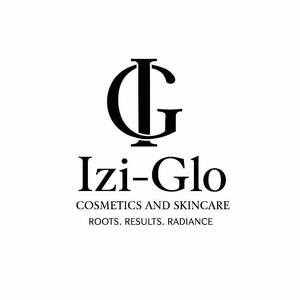

Trade Mark Journal No.2025/021 23 May 2025
UK00004199963 7 May 2025 (3,5,35,44)

- Class 3
- Cosmetics; Skincare cosmetics; Moisturisers [cosmetics]; Cosmetics and cosmetic preparations; Hair cosmetics; Skin fresheners [cosmetics]; Anti-aging moisturizers used as cosmetics; Organic cosmetics; Lip cosmetics; Non-medicated cosmetics; Skin moisturizers used as cosmetics; Natural cosmetics; Cosmetics preparations; Cosmetics in the form of lotions; Colour cosmetics; Facial creams [cosmetics]; Beauty care cosmetics; Suncare lotions [for cosmetic use]; Multifunctional cosmetics; Milks [cosmetics]; Body creams [cosmetics]; After-sun oils [cosmetics]; Skin masks [cosmetics]; Functional cosmetics; Facial gels [cosmetics]; Skin care cosmetics; Fluid creams [cosmetics]; Cosmetics for children; Humectant preparations [cosmetics]; Emollient preparations [cosmetics]; Cosmetics in the form of creams; Powder compacts [cosmetics]; Cosmetic hair lotions; After-sun milks [cosmetics]; Suntanning oil [cosmetics]; Colour cosmetics for the skin; After-sun milk [cosmetics]; Cosmetics for use on the skin; Cosmetic moisturisers; Sunscreens [for cosmetic use]; Cosmetic creams and lotions; Bath powder [cosmetics]; Skin recovery creams [cosmetics]; Night creams [cosmetics]; Body gels [cosmetics]; Cosmetics for the use on the hair; Body and facial creams [cosmetics]; Sunscreen [for cosmetic use]; Sunscreen creams [for cosmetic use]; Body care cosmetics; Creams (Cosmetic -); Cosmetic creams; Cosmetic soaps; Cosmetics in the form of powders; Hair care lotions [for cosmetic use]; After-sun lotions [for cosmetic use]; Cosmetics containing panthenol; Cosmetic facial lotions; Beauty lotions; Facial lotions [cosmetic]; Cosmetics in the form of oils; Colour cosmetics for children; Perfume oils for the manufacture of cosmetic preparations; Skin care lotions [cosmetic]; Sun protecting creams [cosmetics]; Anti-aging creams [for cosmetic use]; Cosmetic products for the shower; Anti-ageing creams [for cosmetic use]; Smoothing emulsions [cosmetics]; Skin cleansers [cosmetic]; Perfumed powders [for cosmetic use]; Moisturising skin lotions [cosmetic]; Cosmetic creams for the skin; Skin creams [cosmetic]; Skin creams [for cosmetic use]; Body and facial gels [cosmetics]; Anti-aging skincare preparations; Tanning oils [cosmetics]; Cosmetics for suntanning; Tanning gels [cosmetics]; Nail cosmetics; Acne cleansers, cosmetic; Facial moisturisers [cosmetic]; Suntan lotion [cosmetics]; Skincare preparations; Cosmetics for eye-lashes; Make-up palettes containing cosmetics; Skin balms [cosmetic]; Suncare lotions; Suntan oils [cosmetics]; Moisturising skin creams [cosmetic]; Eyebrow cosmetics; Anti-ageing serums for cosmetic purposes; Anti-wrinkle creams [for cosmetic use]; Skin care creams [cosmetic]; Cosmetic creams for skin care; Non-medicated cosmetics and toiletry preparations; Beauty serums; Facial cleansers [cosmetic]; Anti-aging moisturizers; Cosmetic nourishing creams; Cleansing creams [cosmetic]; Hair care creams [for cosmetic use]; Cosmetic skin fresheners; Cosmetics for eye-brows; Cosmetic suntan lotions; Skin care oils [cosmetic]; Sun care lotions [for cosmetic use]; Eye cosmetics; Facial creams [cosmetic]; Facial creams [for cosmetic use]; Cosmetic massage creams; Cosmetics for use in the treatment of wrinkled skin; Non-medicated skincare preparations; Beauty serums with anti-ageing properties; Cosmetic sunscreen preparations; Skin toners [cosmetic]; Anti-aging serum for cosmetic use; Beauty creams; Cosmetic products in the form of aerosols for skin care; Skin whitening preparations [cosmetic].
- Class 5
- Pharmaceutical skin lotions; Dermatological pharmaceutical products.
- Class 35
- Marketing research in the fields of cosmetics, perfumery and beauty products.
- Class 44
- Cosmetic make-up services.
Gloria Iziren